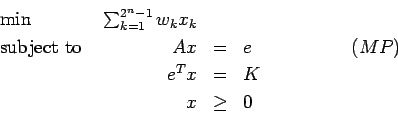

- There exists an x > 0 with Ax=0.
- There exists a y with , .
where .
- (a)
- Solve the linear program using Dantzig-Wolfe decomposition. Initialize with the extreme points x1=(1,0,0)T and x2=(0,0,1)T.
- (b)
- Solve the linear program using the simplex method with the standard modification for handling upper bounds. That is, only include one constraint, and allow variables to be nonbasic at either their upper or lower bounds. Initialize with the basic feasible solution .
Let Sk be the kth nonempty subset of S for . Define
to be the weight of Sk. We are going to examine the linear programming relaxation of this formulation, which we will denote (MP), or Master Problem:

Here, e denotes a vector of ones of the appropriate dimension, and the kth column of A is the incidence vector of Sk. Note that A is an n x (2n -1) matrix.
- (a)
- (15 points) Since there is an exponential number of subsets of the objects, we use a column generation approach. Thus, we work with a Revised Master Problem (RMP), which only contains a subset of the variables. Show that we can determine whether the optimal solution to (RMP) is optimal in (MP) by solving a quadratic programming problem with integrality constraints.
- (b)
- Consider the problem with
S:={1,2,3,4,5} and K=3.
The distances dij are given by the following matrix:
Initially, use the subsets {1}, {2}, {3}, {4}, {5}, {1,2}, and {3,4} to provide the variables for (RMP).- i.
- (5 points)
Show that there is only one feasible solution to (RMP).
Call it
 .
.
- ii.
- (10 points)
The point
is a degenerate BFS.
Find a basis for which the reduced costs are all nonnegative.
- iii.
- (10 points)
Show that
does not solve (MP) by finding a column
in (MP) with negative reduced cost. Add this column to (RMP)
and solve using the revised simplex method.
where x and c are n-vectors, b and y are m-vectors, and A is an m x n matrix. Let and , where e denotes a vector of appropriate dimension with every component is equal to one. Let . Now consider the linear programming problem
where t and w are scalars.
- (a)
- Find a feasible solution to (HLP) which satisfies all the inequalities strictly.
- (b)
- Show that (HLP) is self-dual, that is, the dual to (HLP) is again the problem (HLP).
- (c)
- Show that the optimal value of (HLP) is zero.
- (d)
- Suppose the optimal solution to (HLP) is , with and . How would you use this solution to find optimal solutions to (P) and (D)?
- (e)
- An interior point method can be used to find a strictly complementary
optimal solution to (HLP).
In such a solution, if the primal variable is equal to zero then
the corresponding dual slack is strictly positive.
Use this result to show that if t=0 in a strictly complementary
optimal solution then either there exists a vector
 with Ax=0 and
cTx<0 or there exists a vector y with
and bTy>0.
What can you conclude about (P) and (D)?
with Ax=0 and
cTx<0 or there exists a vector y with
and bTy>0.
What can you conclude about (P) and (D)?